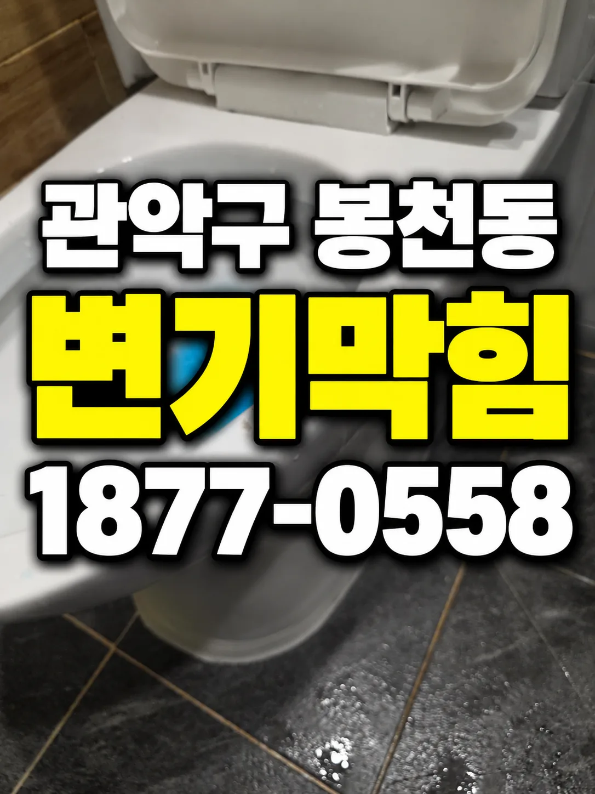
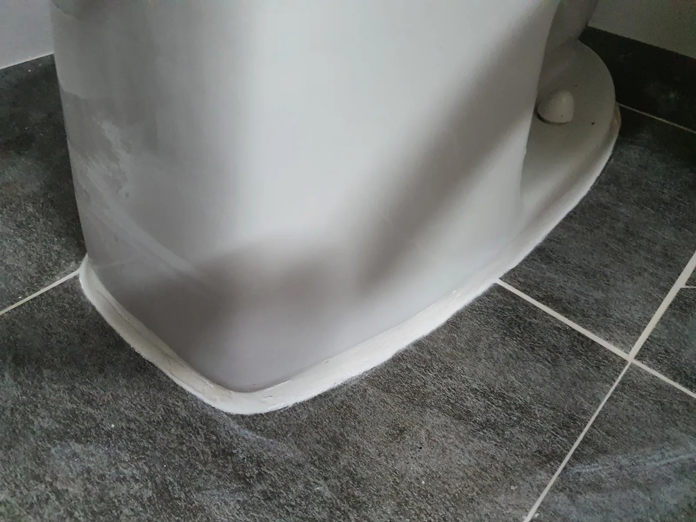
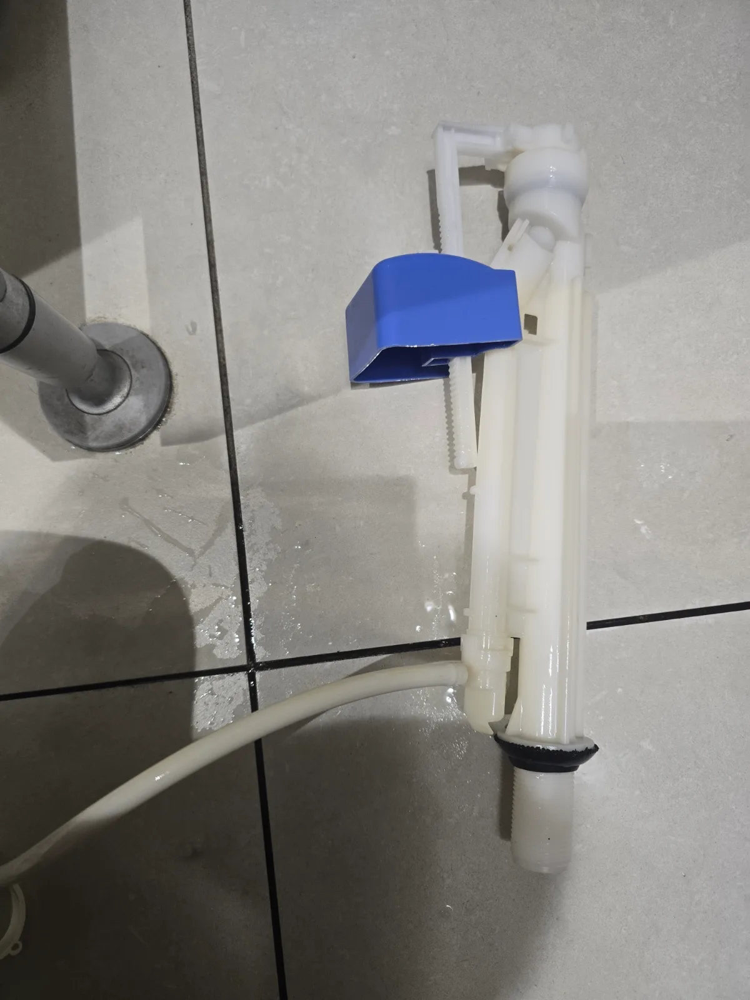

관악구 변기막힘·하수구막힘, 에어건 작업부터 백시멘트 마감까지
막힘 제거 후 재설치 상태는 어떻게 확인했을까요? 관통과 석션으로 해결되지 않은 변기막힘을 탈거 후 확인하고, 압축된 휴지를 에어건으로 처리했습니다. 재설치와 백시멘트 마감 후 정상 통수와 누수 없는 상태를 확인했습니다.
서울 · 관악구
신라건축설비가 관악구에서 직접 진단하고 해결한 실제 작업 기록입니다.
막힘 제거 후 재설치 상태는 어떻게 확인했을까요? 관통과 석션으로 해결되지 않은 변기막힘을 탈거 후 확인하고, 압축된 휴지를 에어건으로 처리했습니다. 재설치와 백시멘트 마감 후 정상 통수와 누수 없는 상태를 확인했습니다.

단단하게 뭉친 휴지를 확인한 뒤 어떻게 작업했을까요? 관통과 석션으로 해결되지 않은 변기막힘을 탈거 후 확인하고, 압축된 휴지를 에어건으로 처리했습니다. 재설치와 백시멘트 마감 후 정상 통수와 누수 없는 상태를 확인했습니다.

변기 뚫는 업체는 어떤 근거로 탈거를 안내할까요? 관통과 석션으로 해결되지 않은 변기막힘을 탈거 후 확인하고, 압축된 휴지를 에어건으로 처리했습니다. 재설치와 백시멘트 마감 후 정상 통수와 누수 없는 상태를 확인했습니다.

변기가 막혔을 때 첫 작업으로 해결되지 않으면 무엇을 확인할까요? 관통과 석션으로 해결되지 않은 변기막힘을 탈거 후 확인하고, 압축된 휴지를 에어건으로 처리했습니다. 재설치와 백시멘트 마감 후 정상 통수와 누수 없는 상태를 확인했습니다.

휴지만 넣었는데 왜 물이 내려가지 않았을까요? 관통과 석션으로 해결되지 않은 변기막힘을 탈거 후 확인하고, 압축된 휴지를 에어건으로 처리했습니다. 재설치와 백시멘트 마감 후 정상 통수와 누수 없는 상태를 확인했습니다.

관악구 봉천동 변기막힘 변기 안에 끼인 유리 화장품 용기의 파손 우려를 고려해 처음부터 탈거하고 용기 위치와 변기 각도를 조정하며 에어건으로
관악구 봉천동 변기막힘 탈거한 변기를 에어건과 석션으로 작업하고 하부 오수관 점검 후 재설치 및 최종 통수 확인

관악구 봉천동 변기막힘 오피스텔에서 관통기와 석션으로 빠지지 않던 플라스틱 용기와 뚜껑 형태의 이물질을 변기 탈거 후 제거했습니다 재설치를

관악구 신림동 변기막힘 에어 압력으로 변기 막힘을 관통하고 노후 필밸브를 교체한 뒤 급수와 물내림 및 누수 확인